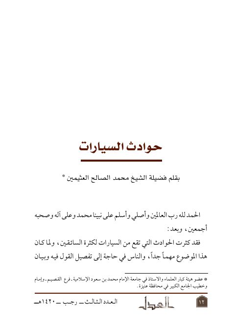

حوادث السيارات
Authors: محمد بن صالح العثيمين
Publishers: مجلة العدل
Download Downloads need an internet connection.
- Published
- 1420هـ 1999 م
- Country
- الرياض، السعودية
- Edition
- 1
- Volumes
- 1
- Pages
- 7
- Type
- بحث
- Category
- الفقه وأصوله
- Subcategory
- القضاء
Description
**▫️ العنوان: حوادث السيارات** ▪️ المؤلف: #محمد_الصالح_العثيمين ▫️ الناشر: #مجلة_العدل ▪️ تاريخ النشر: 1420هـ 1999 م ▫️ بلد النشر: الرياض، #السعودية ▪️ الطبعة: 1 ▫️ عدد الأجزاء: 1 ▪️ الصفحات: 7 ▫️ نوع الوعاء: #بحث ▪️ التصنيف الرئيسي: #الفقه_وأصوله ▫️ التصنيف الفرعي: #القضاء ۪